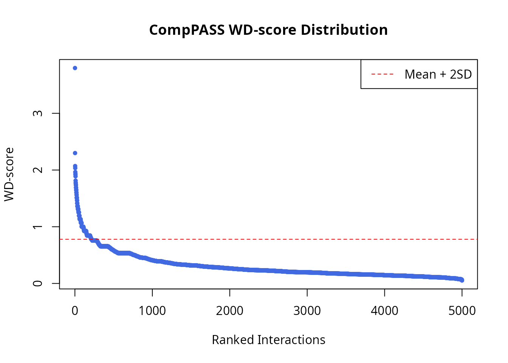
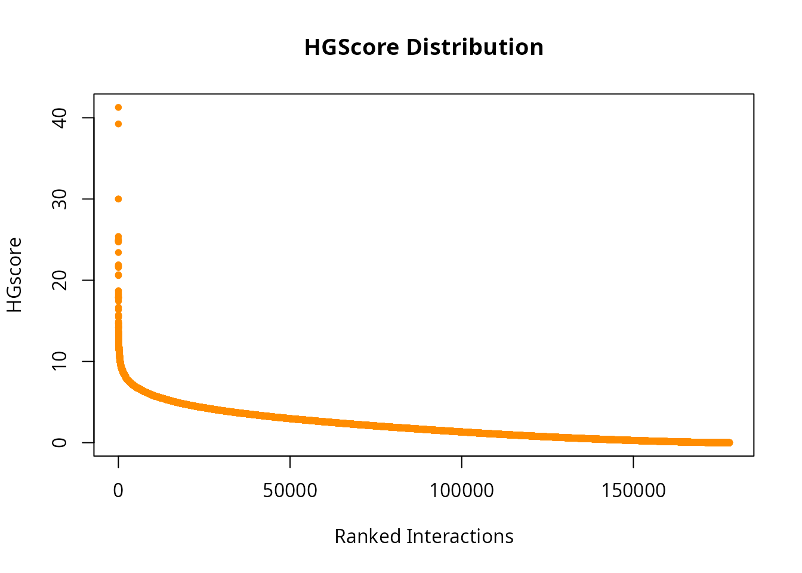

vignettes/quickstart.Rmd
quickstart.RmdThe SMAD (Statistical Modelling of AP-MS Data) package
is designed to process Affinity Purification-Mass Spectrometry (AP-MS)
data. Its primary goal is to compute confidence scores that help
researchers distinguish true protein-protein interactions (PPI) from
non-specific background contaminants.
In a typical AP-MS experiment, many proteins might be identified, but
only a fraction are bona fide interactors. SMAD
implements several validated statistical models to assign probability
scores to these interactions.
You can install the SMAD package from Bioconductor using
the following command:
if (!require("BiocManager", quietly = TRUE))
install.packages("BiocManager")
BiocManager::install("SMAD")SMAD requires input data as a dataframe. The standard
format includes identifiers for the experiment run, the bait protein,
the prey protein, and quantitative measurements (like spectral counts
and protein length).
We provide a sample dataset TestDatInput, which is a
subset of the BioPlex 2.0 data focusing on apoptosis-related
proteins.
library(SMAD)
#> Loading required package: RcppAlgos
data("TestDatInput")
head(TestDatInput)
#> idRun idBait idPrey countPrey lenPrey
#> 7452 68982 TIMP2 ACTC1 15 377
#> 8016 66491 CASP1 CDK4 9 303
#> 7162 68486 BTG3 RPL24 3 157
#> 8086 66491 CASP1 IMPDH2 9 514
#> 23653 72934 LUM THOP1 7 689
#> 9196 67747 FAS RFC5 9 340The columns required for most scoring functions are:
| Column Name | Description |
|---|---|
idRun |
Unique ID for the AP-MS experiment run |
idBait |
Identifier for the bait protein used in the pull-down |
idPrey |
Identifier for the identified prey protein |
countPrey |
Quantitative measure (e.g., peptide or spectral counts) |
lenPrey |
Length of the prey protein (used for normalization) |
SMAD offers multiple scoring algorithms. This guide
focuses on two popular methods: CompPASS and
HGScore.
CompPASS is a “spoke model” algorithm that identifies high-confidence interactors by comparing occurrences across a large number of experiments. It was originally developed by Sowa et al. (2009) and widely used in the BioPlex projects.
The output includes several metrics, with the WD-score (Weighted D-score) being the most commonly used for ranking.
# Run CompPASS scoring
scoreCompPASS <- CompPASS(TestDatInput)
# View the top results
head(scoreCompPASS[order(scoreCompPASS$scoreWD, decreasing = TRUE), ])
#> idBait idPrey AvePSM scoreZ scoreS scoreD Entropy scoreWD
#> 1082 CD69 SPTAN1 101 7.938223 81.02469 81.02469 0 3.798496
#> 4618 TNF ATP2A2 37 7.938223 49.04080 49.04080 0 2.299068
#> 1169 CDK2 CREBBP 30 7.938223 44.15880 44.15880 0 2.070197
#> 3536 MMP2 MMP2 58 233.709532 43.41659 43.41659 0 2.035279
#> 1161 CDK2 CCNB1 27 7.938223 41.89272 41.89272 0 1.963961
#> 1519 DAP3 MRPS35 26 7.938223 41.10961 41.10961 0 1.927248We can visualize the distribution of scores to see the separation of high-confidence interactors:
par(mfrow = c(1, 1))
plot(sort(scoreCompPASS$scoreWD, decreasing = TRUE),
pch = 20, col = "royalblue",
xlab = "Ranked Interactions",
ylab = "WD-score",
main = "CompPASS WD-score Distribution")
abline(h = mean(scoreCompPASS$scoreWD) + 2 * sd(scoreCompPASS$scoreWD),
col = "red", lty = 2)
legend("topright", legend = "Mean + 2SD", col = "red", lty = 2)
HGScore is based on a hypergeometric distribution error model (Hart et al., 2007), incorporating Normalized Spectral Abundance Factor (NSAF) to account for protein length. Unlike CompPASS, HGScore can incorporate a “matrix model” perspective, often leading to a larger number of inferred interactions.
# Run HG scoring
scoreHG <- HG(TestDatInput)
# View the top results
head(scoreHG[order(scoreHG$HG, decreasing = TRUE), ])
#> InteractorA InteractorB ppiTN tnA tnB PPI NMinTn HG
#> 44384 CDKN1A CDKN1B 13 403 396 CDKN1A~CDKN1B 477317 41.28085
#> 39530 CCNB1 CKS1B 9 212 212 CCNB1~CKS1B 477317 39.24069
#> 39557 CCNB1 SKP2 7 212 208 CCNB1~SKP2 477317 30.00500
#> 49442 CKS1B SKP2 7 212 208 CKS1B~SKP2 477317 30.00500
#> 39568 CCND2 CDKN1A 7 195 403 CCND2~CDKN1A 477317 25.38601
#> 44500 CDKN1B SKP2 7 396 208 CDKN1B~SKP2 477317 25.01539Visualizing the HGScore distribution:
plot(sort(scoreHG$HG, decreasing = TRUE),
pch = 20, col = "darkorange",
xlab = "Ranked Interactions",
ylab = "HGscore",
main = "HGScore Distribution")
While CompPASS and HGScore are excellent starting points,
SMAD includes several other advanced scoring methods such
as:
For a detailed showcase of all these functions, please refer to the Scoring Functions in SMAD vignette:
vignette("scoring_functions", package = "SMAD")
sessionInfo()
#> R version 4.5.3 (2026-03-11)
#> Platform: x86_64-pc-linux-gnu
#> Running under: Ubuntu 24.04.4 LTS
#>
#> Matrix products: default
#> BLAS: /usr/lib/x86_64-linux-gnu/blas/libblas.so.3.12.0
#> LAPACK: /usr/lib/x86_64-linux-gnu/lapack/liblapack.so.3.12.0 LAPACK version 3.12.0
#>
#> locale:
#> [1] LC_CTYPE=en_CA.UTF-8 LC_NUMERIC=C
#> [3] LC_TIME=en_CA.UTF-8 LC_COLLATE=en_CA.UTF-8
#> [5] LC_MONETARY=en_CA.UTF-8 LC_MESSAGES=en_CA.UTF-8
#> [7] LC_PAPER=en_CA.UTF-8 LC_NAME=C
#> [9] LC_ADDRESS=C LC_TELEPHONE=C
#> [11] LC_MEASUREMENT=en_CA.UTF-8 LC_IDENTIFICATION=C
#>
#> time zone: America/Moncton
#> tzcode source: system (glibc)
#>
#> attached base packages:
#> [1] stats graphics grDevices utils datasets methods base
#>
#> other attached packages:
#> [1] SMAD_1.27.4 RcppAlgos_2.10.0 BiocStyle_2.38.0
#>
#> loaded via a namespace (and not attached):
#> [1] jsonlite_2.0.0 dplyr_1.2.1 compiler_4.5.3
#> [4] BiocManager_1.30.27 tidyselect_1.2.1 Rcpp_1.1.1-1
#> [7] tidyr_1.3.2 jquerylib_0.1.4 systemfonts_1.3.2
#> [10] textshaping_1.0.5 yaml_2.3.12 fastmap_1.2.0
#> [13] R6_2.6.1 generics_0.1.4 knitr_1.51
#> [16] htmlwidgets_1.6.4 tibble_3.3.1 bookdown_0.46
#> [19] desc_1.4.3 bslib_0.10.0 pillar_1.11.1
#> [22] rlang_1.2.0 cachem_1.1.0 xfun_0.57
#> [25] fs_2.0.1 sass_0.4.10 otel_0.2.0
#> [28] cli_3.6.6 withr_3.0.2 pkgdown_2.2.0
#> [31] magrittr_2.0.5 digest_0.6.39 rstudioapi_0.18.0
#> [34] gmp_0.7-5.1 lifecycle_1.0.5 vctrs_0.7.3
#> [37] evaluate_1.0.5 glue_1.8.0 data.table_1.18.2.1
#> [40] ragg_1.5.2 purrr_1.2.2 rmarkdown_2.31
#> [43] tools_4.5.3 pkgconfig_2.0.3 htmltools_0.5.9